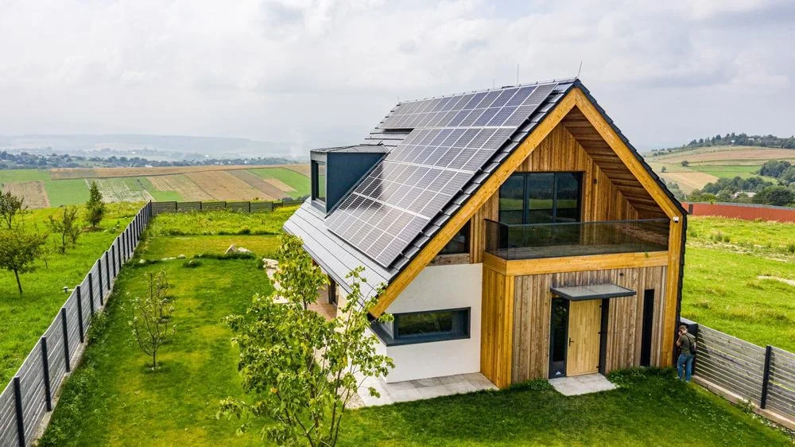

Eco Homes: Most Sustainable Features to ConsiderWhen it comes time to move into your next home, it benefits you—and the environment—to incorporate sustainable features. Eco homes make use of renewable resources, reduce energy consumption, and conserve natural resources, including water. While fully converting a space to be more eco-friendly might seem out of reach (or out of pocket), sustainable design is a lot easier to pull off than you think. Read more |
|
|---|---|
Passive designSustainable homes begin with a sustainable framework. If you`re working with a designer to build a brand-new home, it`s imperative to employ passive design, which reduces a house`s ecological footprint by using the local climate and landscape to its advantage. One way to do that is taking note of the orientation of the house in relation to the sun. Read more |
Recycled materialsInstead of shopping for new counters, cabinets, and shelving, turn to places like Habitat for Humanity`s ReStore or an architectural salvage shop for materials to reuse in your home. “You can retrofit pretty much any old piece of furniture into the space you need it for,” says Gabriela Narvaez, general contractor and founder of Guild Properties. Read more |
Energy-efficient windowsInsulated and laminated impact windows and doors do wonders for reducing a home`s overall energy consumption, explains Manny Angelo Varas, president and CEO of homebuilder MV Group USA. Read more |
Solar panelsAs a Green designee, realtor Cheneil Lowe sits on the Atlanta Realtors Association`s sustainability committee. She often works with clients to find the solar panels that work best for their home and energy bill budgets. Read more |